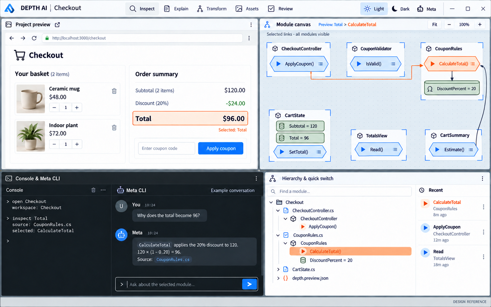
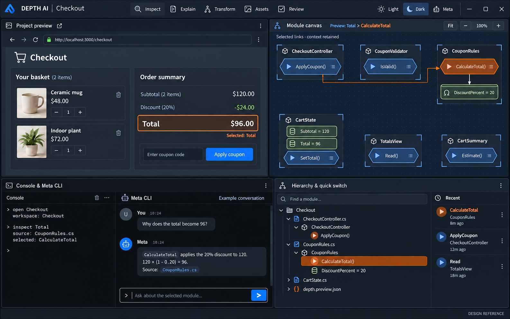

Depth AI — 네 영역 고정 배치
프리뷰, 콘솔·CLI 채팅, 모듈 작업면, 하이어라키를 한 화면에 함께 둡니다.
왼쪽 위큰 프로젝트 프리뷰
오른쪽 위모듈 구성·연결 작업면
왼쪽 아래콘솔 출력 + Meta CLI 채팅·입력
오른쪽 아래하이어라키 + 검색·최근 모듈
사용자가 지정한 배치를 반영한 생성 레퍼런스입니다. 실제 EXE 화면이나 Meta 실행 결과가 아닙니다.
01 · Light

02 · Dark

제작: built-in image_gen. 실제 관계선은 소스 데이터에서 다시 그려야 합니다. 남은 선·표기 오차는 검토 기록에 명시했습니다.